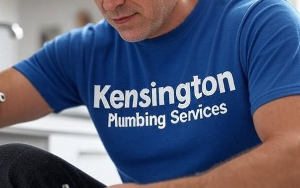

Family building roots since 1962. Plumbing experience since 1998.
Two dates, one honest story: the family came to London to work in construction in 1962, and Nick began plumbing professionally in 1998.
Built on practical experience
In 1962, Nick’s father Joe and his brothers came south from Bradford to build working lives in London. Their trades included bricklaying, plastering, engineering and property renovation.
Growing up around building work gave Nick an early understanding of how London homes are put together. He began plumbing in 1998 and has since worked across domestic properties, managed housing and renovation projects throughout West London.
Kensington Plumbing Services is presented as a local plumbing business—not as a company founded in 1962. The earlier date records the family’s London construction roots; 1998 records Nick’s own plumbing experience.

Family arrives in London
Joe and his brothers bring their building trades from Bradford and begin working on London projects.
Nick starts plumbing
Hands-on plumbing work begins across homes and properties in West London.
Kensington Plumbing Services
A local service focused on repairs, replacements, everyday plumbing and trusted property maintenance.
Need a dependable local plumber?
Call directly or send photographs and a short description on WhatsApp.